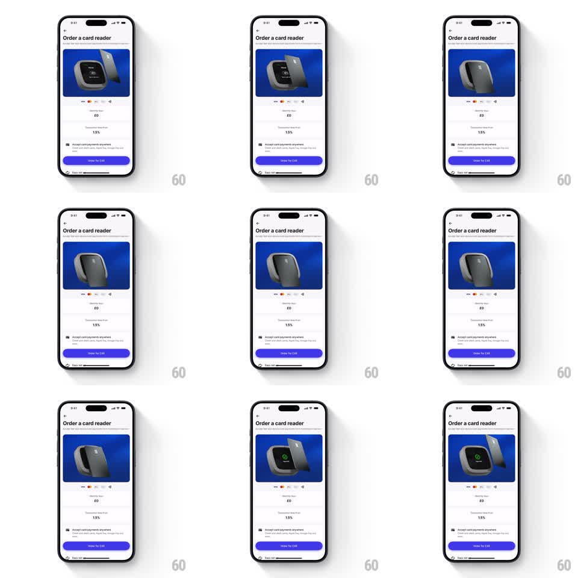

Media
Frame-by-frame

Rebuild this animation 1:1: Revolut's card-reader hero - a 3D reader rotates on a blue stage, a card floats in and taps it, and the reader's screen flashes a green check, on a loop.

Rebuild this animation 1:1: Revolut's card-reader hero - a 3D reader rotates on a blue stage, a card floats in and taps it, and the reader's screen flashes a green check, on a loop. ## Integration Integration: stack-agnostic spec - springs given as stiffness/damping, timed motions as duration + curve; map every value to your framework and animation library of choice. ## Scene "Order a card reader" screen: a blue hero panel up top containing the 3D reader, pricing rows and an Order button below. All motion lives in the hero panel. ## Motion spec Pattern: contactless payment demo loop, ~4s. - The reader rotates slowly on its vertical axis (~8s per turn, continuous through the whole loop). - A payment card glides in from the right, hovers at the reader's NFC zone (approach 600ms, ease-out, small hover bob), and the reader's screen lights up with a green check (instant flash + 300ms glow settle). - The card glides back out (500ms) as the check fades; brief rest, then the loop repeats. - The reader's screen is a live element - dark when idle, green on success. ## Calibration - The tap is a hover, not a collision - the card stops ~10px from the reader. - The green flash lands exactly when the card reaches closest approach. ## Reduced motion Static composition: reader at three-quarter angle, card at the NFC zone, check lit. ## Don't miss - The reader keeps rotating through the tap - pausing it makes the loop feel stitched. - The check is the only green in the panel; keep it singular.